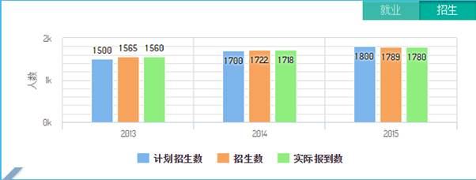
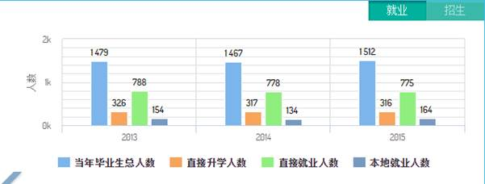

招生就业
功能描述：
招生
- 展示当前学年的近3年内学生招生情况：以计划招生数、招生录取人数、实际报到数进行统计分析。
- 学校可以根据实际需要进行招生统计点在系统内设置展示：如有些学校需要展示在校生总数，新生人数等统计，或者其他统计项，通过系统进行设置进行展示。
就业
展示当前学年的近3年内毕业生就业情况：以毕业生总数、直接升学人数、直接就业人数、本地就业人数等进行数据分析。
学校可以根据实际需要进行就业统计点在系统内设置展示：如有些 学校在就就业方面需要统计自主创业人数、当地就业人数、中小微及基层就业人数、国家骨干企业就业人数，该内容还可以根据学校实际情况自行调整
参考界面

